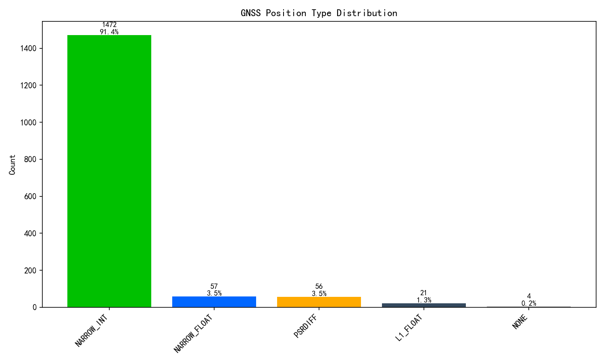
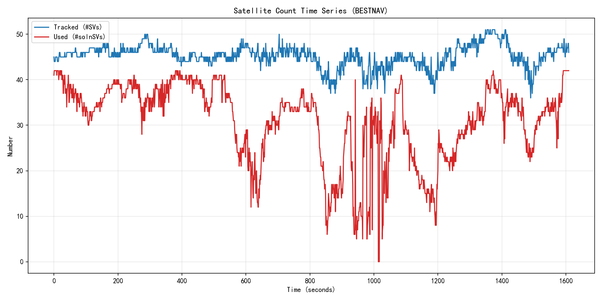
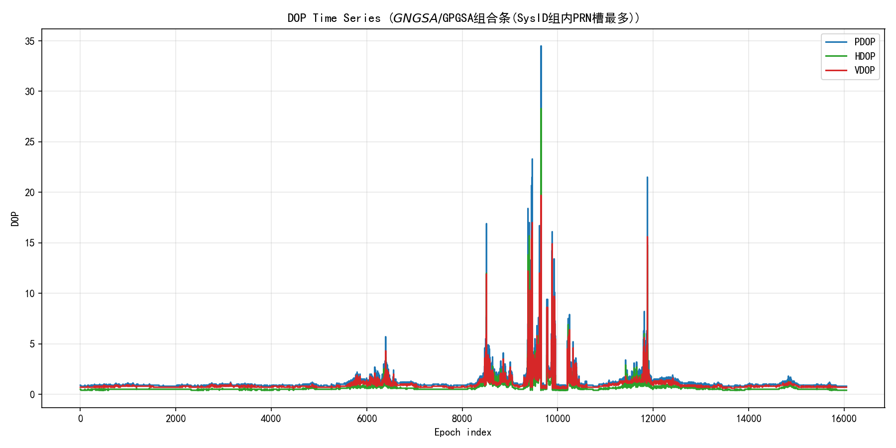
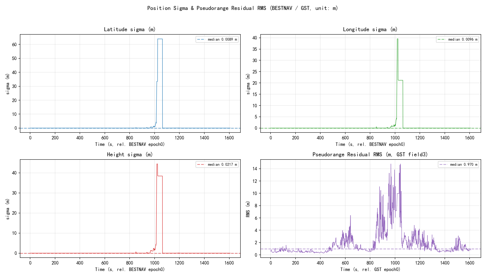
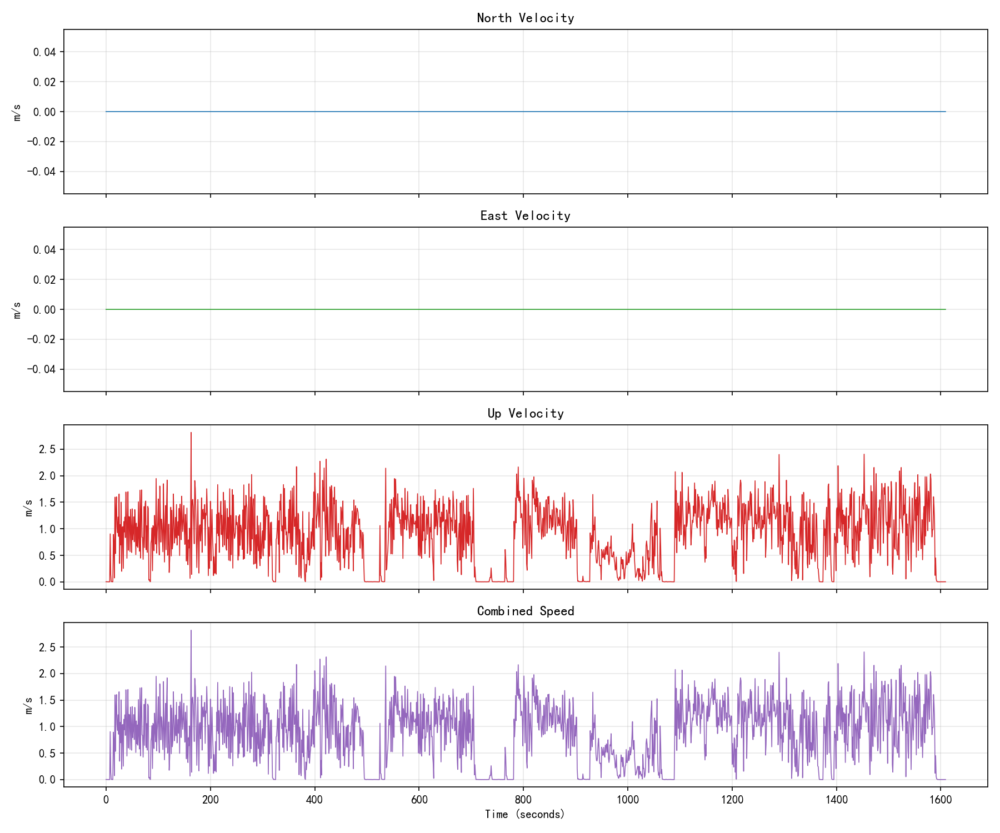
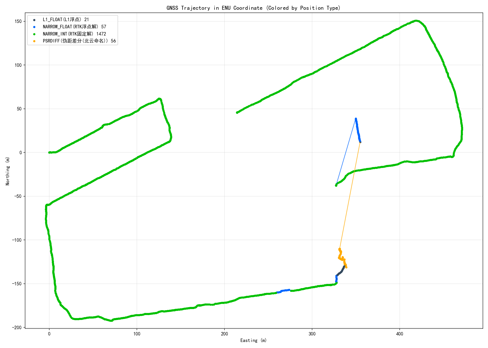
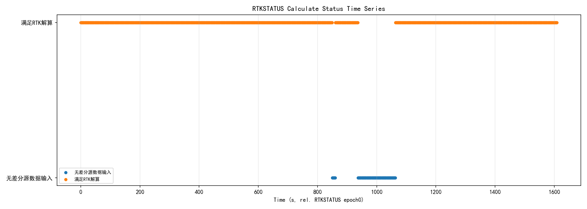
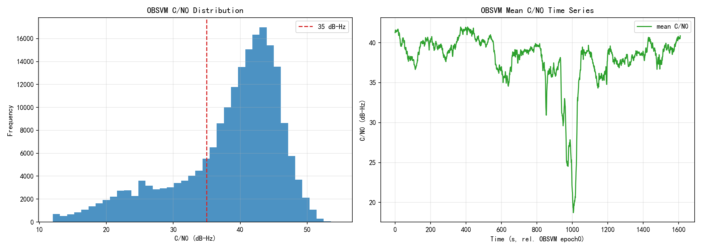

输入:1021城市复杂场景运动-北斗.log | 生成时间:2026-10-21 16:09:34 | 协议依据:N4 Products Commands and Logs Reference Book R1.15
| 项目 | 结果 |
|---|---|
| ASCII合法报文 | 469194条 |
| 原始行数 | 544018行 |
| OBSVMB合法二进制历元 | 1610个；CRC失败块0个 |
| ASCII校验通过报文 / 锚点候选 | 469194条 / 469195个；校验失败锚点1个 |
| ASCII残片/不可识别行 | 55行 |
| BESTNAVA时间跨度 | 1609.0s |
| 报文 | 实测头 | 条数 | 参考周期s | 实际周期s | 实际Hz | 跳变数 | 最大跳变s | 估算缺槽 | 状态 | 备注 |
|---|---|---|---|---|---|---|---|---|---|---|
| BESTNAVA | #BESTNAVA | 1610 | 0.100 | 1.000 | 1.000 | 0 | - | 0 | ok | 实测周期1.000s与推荐参考0.100s不一致，需结合现场配置确认 |
| GGA | $GNGGA | 16091 | 0.100 | 0.100 | 10.000 | 2 | 1.000 | 16 | info | 按实测节律检测到2个时间跳变/缺槽区间(最大1.000s，估算缺16个槽位) |
| GSA | $GNGSA,$GPGSA | 88110 | 0.100 | - | - | 0 | - | 0 | ok | 无可用时间戳，未计算周期；按实测条数呈现 |
| GRS | $GNGRS,$GPGRS | 296059 | 0.100 | 0.100 | 10.000 | 3 | 4.000 | 55 | info | 按实测节律检测到3个时间跳变/缺槽区间(最大4.000s，估算缺55个槽位) |
| GSV | $GPGSV,$GLGSV,$GBGSV,$GAGSV,$GQGSV | 60884 | 1.000 | - | - | 0 | - | 0 | ok | 无可用时间戳，未计算周期；按实测条数呈现 |
| GST | $GNGST,$GPGST | 1610 | 1.000 | 1.000 | 1.000 | 0 | - | 0 | ok | - |
| SATSINFOA | #SATSINFOA | 1610 | 1.000 | 1.000 | 1.000 | 0 | - | 0 | ok | - |
| BESTSATA | #BESTSATA | 1610 | 1.000 | 1.000 | 1.000 | 0 | - | 0 | ok | - |
| RTKSTATUSA | #RTKSTATUSA | 1610 | 1.000 | 1.000 | 1.000 | 0 | - | 0 | ok | - |
| OBSVMB | OBSVMB | 1610 | 1.000 | 1.000 | 1.000 | 0 | - | 0 | ok | - |

固定解率:91.4%
| Pos Type | 数量 | 占比 |
|---|---|---|
| NARROW_INT | 1472 | 91.4% |
| NARROW_FLOAT | 57 | 3.5% |
| PSRDIFF | 56 | 3.5% |
| L1_FLOAT | 21 | 1.3% |
| NONE | 4 | 0.2% |
| Sol Status | 数量 | 占比 |
|---|---|---|
| SOL_COMPUTED | 1606 | 99.8% |
| INSUFFICIENT_OBS | 4 | 0.2% |


| 指标 | 均值 | 最小 | 最大 |
|---|---|---|---|
| 跟踪卫星 #SVs | 45.2055900621118 | 36 | 51 |
| 参与解算 #solnSVs | 30.88107098381071 | 5 | 42 |
| PDOP | 1.205 | 0.700 | 34.500 |
| HDOP | 0.699 | 0.400 | 28.300 |
| VDOP | 0.973 | 0.600 | 19.700 |
DOP源：$GNGSA/$GPGSA组合条(SysID组内PRN槽最多)。GSA无UTC时间戳，图横轴为组合条序号，不伪装成精确时间轴。

| 指标 | 均值 | 中位 | 最小 | 最大 |
|---|---|---|---|---|
| 纬度σ m | 1.748 | 0.009 | 0.007 | 64.031 |
| 经度σ m | 0.739 | 0.010 | 0.007 | 39.540 |
| 高度σ m | 1.208 | 0.022 | 0.017 | 44.446 |
| GST伪距残差RMS m | 1.902 | 0.970 | 0.280 | 14.780 |
| GST??? | UTC??????; ?talker??: ????$GNGST, ??4????($GPGST@062942.00, $GPGST@062943.00, $GPGST@062944.00, $GPGST@062945.00) | |||
| GRS逐星残差 m | 1.083 | 0.400 | 0.000 | 14.300 |


平均速度 0.878 m/s；最大速度 2.816 m/s。ENU以首个有效BESTNAV点为参考点，仅用于轨迹形状，不是精度误差。
基站ID 1793；差分龄期平均1.073s，最大7.000s。

| RTK计算状态 | 数量 |
|---|---|
| 满足RTK解算 | 1472 |
| 无差分源数据输入 | 138 |

OBSVM 1610历元/204707频点观测；平均C/N0 38.231 dB-Hz；低C/N0(<35)占比25.9%；locktime归零/消失事件8267个；重捕获事件5325个。事件判定仅基于OBSVM实测locktime，1Hz采集时间分辨率为1s。
检测到 1610 个SATSINFOA历元。该ASCII变长频率段在手册表格中未给出足够无歧义的切分规则，为避免字段猜测，本版不生成天空分布/SNR统计。